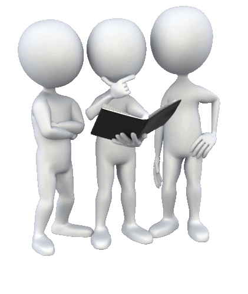

Etapas del Proceso Administrativo
Planeación
En esta etapa consiste en saber por adelantado la dirección de las empresa.
- ¿Por qué se va a hacer así?
- ¿Quiénes van a hacerlo /participar?
- Este tipo de preguntas conocidas como las “WH Questions” te servirán no solamente para esta etapa del proceso administrativo, te servirán para tu vida diaria.
Organización
Es un proceso dentro del proceso administrativo, permite el equilibrio de los recursos, cuyo fin es establecer la relación
entre el trabajo y quien debe realizarlo.
Dirección
En esta etapa se trata o se debe lograr que todos los involucrados en el proceso contribuyan en el logro de los objetivos.
Se ejerce a través de subfunciones: Liderazgo,motivación y comunicación
Control
Luis Alegre, Manero Berné y Carmen Galve en su libro Fundamentos de economía de la empresa,sostienen que el control
se ejerce con referencia a los planes mediante la comparación regular
y sistemática de las previsiones respecto a los objetivos.
